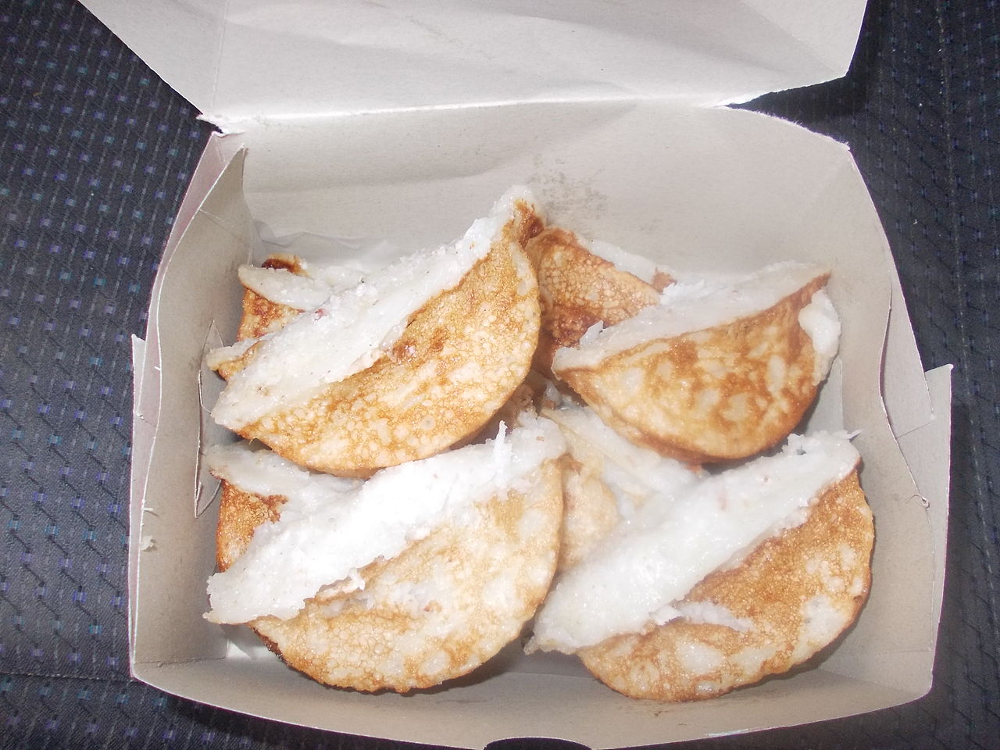
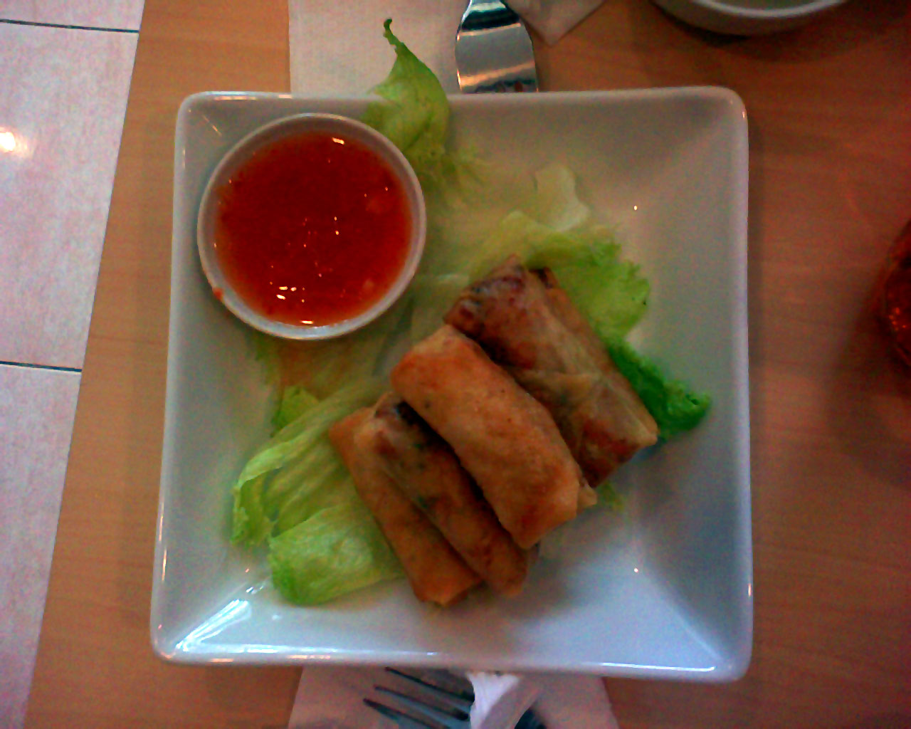

MAKANAN TRADISIONAL
Bandros

Bandros adalah salah satu makanan khas daerah Jawa Barat.
Kue tradisional ini terbuat dari campuran tepung beras, kelapa parut, daun suji dan santan.
Kue ini biasanya dihidangkan dengan taburan gula pasir.
Bentuk kue ini mirip dengan kue pukis karena memang dicetak pada cetakan yang serupa, yakni cetakan yang
berbentuk setengah lingkaran dan berjejer cukup banyak, dengan tungku arang.
Kue bandros biasanya disajikan bersamaan dengan teh manis atau kopi.
Lumpia

Lumpia atau terkadang dieja sebagai lun pia (Hanzi: 潤餅 / 润饼, POJ: lūn-piáⁿ, hanyu pinyin: rùn bǐng, Bahasa
Inggris: long pia) adalah sejenis jajanan tradisional Tionghoa. Lumpia yang dikenal oleh orang Indonesia
merupakan lafal Bahasa Hokkian.
Lumpia terdiri dari lembaran tipis tepung gandum yang dijadikan sebagai pembungkus isian yang umumnya adalah
rebung, telur, sayuran segar, daging, atau makanan laut.
Di Indonesia, lumpia dikenal sebagai jajanan khas Semarang dengan tata cara pembuatan dan bahan-bahan yang telah
disesuaikan dengan tradisi setempat.
Kerak Telor

Kerak telur adalah makanan asli daerah Jakarta (Betawi),
dengan bahan-bahan beras ketan putih, telur ayam atau bebek,
ebi (udang kering yang diasinkan) yang disangrai kering ditambah bawang merah goreng,
lalu diberi bumbu yang dihaluskan berupa kelapa sangrai, cabai merah, kencur,
jahe, merica butiran, garam dan gula pasir.
Kerak telor dapat ditemukan pada hari biasa.
Anda bisa menemukan kerak telor di sekitar Kota Tua, Jakarta Barat.
Menurut sejarah, Kerak Telor sudah ada dari zaman kolonial Belanda,
kerak telor diciptakan oleh masyarakat Betawi secara tak sengaja Pada tahun 1970-an.
Karedok

Karedok atau keredok adalah salah satu makanan khas Sunda di Indonesia.
Karedok dibuat dengan bahan-bahan sayuran mentah antara lain; mentimun, taoge, kol, kacang panjang, ubi, daun
kemangi, dan terong atau leunca.
Sedangkan sausnya adalah bumbu kacang yang dibuat dari cabai merah, bawang putih, kencur, kacang tanah, air
asam, gula jawa, garam, dan terasi.
Salah satu ciri dari karedok adalah menggunakan oncom bakar. Bila tidak menggunakan oncom bakar disebutnya lotek
mentah (atah).
Karedok biasanya menjadi makanan pelengkap dalam menu sehari-hari orang Sunda.
Panada

Panada adalah salah satu kue khas Manado yang populer selain klappertaart.
Ada yang mengatakan kue ini merupakan pengaruh kuliner Belanda, ada yang mengatakan kue ini merupakan pengaruh
kuliner Portugis karena bentuknya yang mirip kue pastel.
Akan tetapi, diyakini kue ini merupakan pengaruh kuliner Spanyol karena sangat mirip dengan kue Empanada.
Kue ini seperti roti goreng / donat (yang membedakan adalah penggunaan santan sebagai pengganti air dalam proses
pembuatannya),
yang diisi dengan ikan laut cakalang dibumbu pampis. Bumbu pampis adalah ikan cakalang dimasak dengan bawang
merah, daun jeruk, kemangi, cabe merah, daun bawang, sedangkan ikannya disuir kecil-kecil.
Pembuatan panada terdiri atas bahan dan isi, kemudian digoreng dalam minyak hangat.